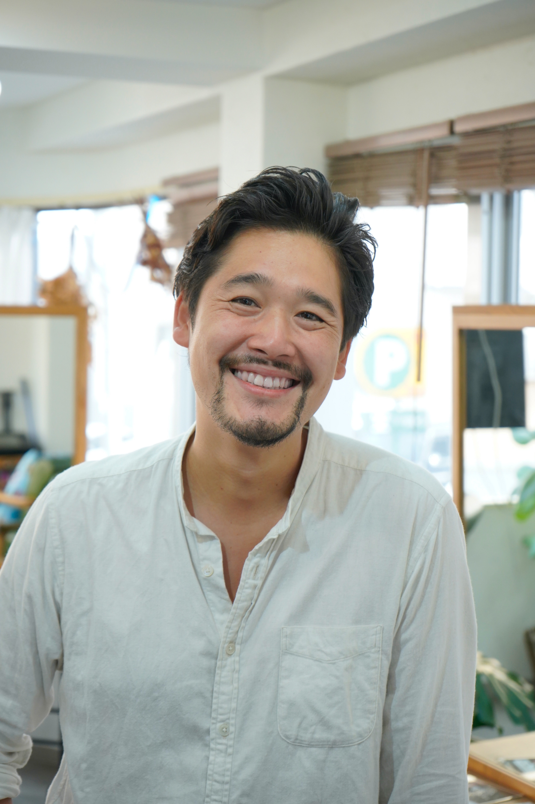

| 生年月日 | 1984年08月20日 |
|---|---|
| 血液型 | A型 |
| 趣味 | 釣り / サウナ |
くせ活かし
丁寧なカウンセリング
美髪ケア
こんにちは、溝部です。髪の悩みの根本から向き合い、乾かすだけでまとまる再現性を重視したデザインをご提案します。
じっくりお話を伺い、お客様の“らしさ”が一番輝く形を一緒に見つけます。初めての方もお気軽にどうぞ。
※担当のご予約は LINE からどうぞ。